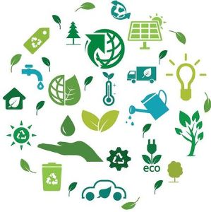
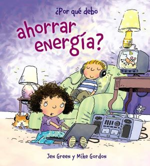

As you know during this decade population started increasing and we started creating much more renewable and
non-renewablematerils.
Like computers so many simple steps were created in order to reduce the damage to our world
Is the study and practice of using computers and IT resources in a more efficient and environmentally responsible
way

Almost everyone use the computer, iPad, phone… for working or simply because of fun,
the only problem is that you are 24/7 in a server and by using it your are wasting energy
and in some point you are going to change your device but also you have to print papers that at some point
you are never going to use another time and not only you are polluting but also you are throwing money that you could
use in more important things
+Turn off the devices you are not using those can waste much more energy when you are not using those than when you are
+Recicle old equipment like seling the items that still working, you not only help the planet but also your economy
+When shopping search for eco- friendly packages
+Transition from paper to digital procceses, digital items pollute les than the paper
+Well taking about work instead of going to the actual work meeting (in other countries) you can web conference